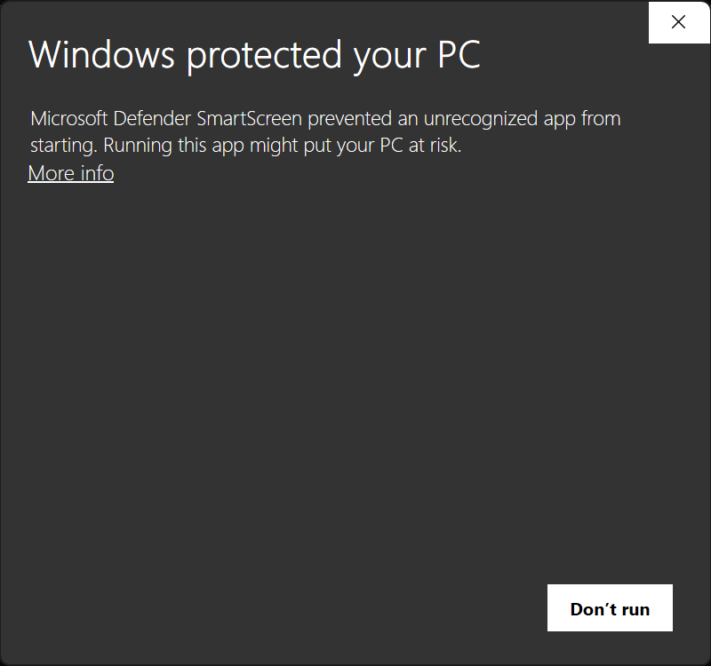
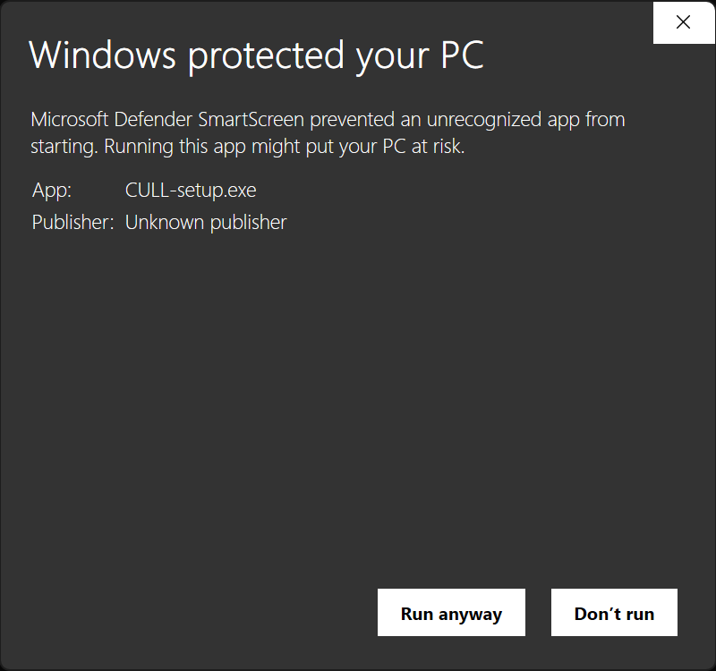

Download, open, cull. One installer for Windows, one for Mac. The app updates itself from then on.
Free up to 250 frames a session · Pro takes the limit away · every release, with checksums, on the downloads page
Windows
Open CULL-setup.exe. The first time, Windows shows this:


The screen means the installer carries no publisher certificate. It does not mean anything was found in it. Windows shows it for any installer it has not seen many times before, and the updates CULL installs later do not show it.
Why it is not signed
CULL is made by one person. A signing certificate costs more each year than CULL earns, on Windows and on Mac alike, so the installers go out unsigned. If that changes, the screen goes away on its own.
Check the download yourself
Each release lists the SHA-256 of both installers and a VirusTotal link, where seventy-odd antivirus engines report on that exact file. To compare the checksum, open PowerShell and run Get-FileHash ~\Downloads\CULL-setup.exe; the hash it prints should match the one on the downloads page.
Mac
Open CULL.dmg and drag CULL to Applications. CULL runs on Apple silicon Macs.
The first launch says "CULL" is damaged and can't be opened. It is not. That is the message macOS shows for any downloaded app that carries no Apple certificate. Open Terminal and run
xattr -cr /Applications/CULL.app
then open CULL from Applications. From then on it opens like any app.
Why it is not notarized
Like the Windows installer, the Mac app is unsigned: the yearly Apple developer fee costs more than CULL earns. The message is about the missing certificate, not about the file. If that changes, the message goes away on its own.
Check the download yourself
Open Terminal and run shasum -a 256 ~/Downloads/CULL.dmg and compare it with the downloads page.
Then
Open a folder of RAW files, or drop one on the window. Hold Tab for the keys. Something wrong? Support.